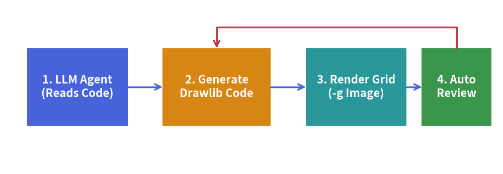

AI-Driven Workflow & Agent Setup
Drawlib v0.3 is engineered from the ground up for autonomous AI coding agents (such as Claude Code, Cursor, Gemini, and GitHub Copilot).
Instead of requiring human engineers to manually craft technical specifications and draw architecture diagrams, Drawlib makes it possible to delegate the entire documentation lifecycle to AI agents.
Why Drawlib is Ideal for AI Agents
When tasked with generating technical illustrations, AI agents typically struggle with raw SVG generation or GUI design tools:
- Raw SVGs are brittle: LLMs frequently miscalculate coordinate bounds, leading to clipped text and misaligned arrows.
- Low-level Matplotlib requires boilerplate: Matplotlib is designed for statistical plots, not clean software architecture schemas.
- GUI tools cannot be driven by agents: AI agents cannot drag and drop shapes in Visio or Figma.
The Drawlib Advantage for LLMs
- High-Level Declarative Abstractions:
Instead of drawing raw boxes and wires, an agent simply writesArchitectureDiagram,ERDiagram, orFlowDiagram. The library handles orthogonal routing, padding, and marker styling automatically. - Built-in Visual Harmony:
Predefined semantic styles (Styles.primary_flat,Styles.accent_flat) ensure that AI-generated diagrams look publication-ready without fine-tuning color codes. - On-Demand Rule Injection:
Drawlib includes a complete built-in manual that agents can query via the CLI at runtime (drawlib rules show <topic>), eliminating context-window bloat and outdated training data.
Equipping Your AI Agent
To enable your AI agent to author Drawlib illustrations and documentation, configure your environment with Drawlib's core guidelines.
1. Configure Workspace Rules
Add the Drawlib agent instructions to your project's rule file:
- Cursor: Paste the instructions into
.cursorrulesor.cursor/rules/drawlib.md. - Claude Code: Add instructions to your project's
CLAUDE.md. - Gemini / Generic Agents: Place instructions in
.agents/rules/drawlib.md.
You can dump the official agent instruction template directly using the CLI:
# Display the bootstrap agent manual
$ uv run drawlib rules show agent-instruction
2. Essential Commands to Teach Your Agent
Ensure your agent knows how to query rules and preview drawings:
| Purpose | Command |
|---|---|
| Query Module Syntax | uv run drawlib rules show <topic> (e.g. lib-diagrams, lib-smartarts) |
| List Available Rules | uv run drawlib rules list |
| Render Grid Preview | uv run drawlib show <path> -g -o .drawlib/scratch/test.png |
| Build Full Docs | ./build.sh or uv run drawlib build html docs_src/ -o docs_html/ |
The Autonomous Verification Loop
Teach your agent to follow Drawlib's autonomous self-correction loop when creating diagrams:

- Inspect Context: The agent inspects actual repository files (models, API routers, database schemas) to understand the architecture.
- Draft Illustration: The agent writes drawing prototype code in an isolated scratch script (
.drawlib/scratch/test.py) or embedded Markdown block. Do not pollute the root directory; ensure.drawlib/is in.gitignore. - Render Image with Grid (
-g):
uv run drawlib show .drawlib/scratch/test.py -g -o .drawlib/scratch/test.png - Multimodal Self-Review: The agent inspects the rendered PNG with its vision/file viewing tool, checking for:
- Label overflow or text clipping outside boxes.
- Overlapping arrow lines or awkward elbow routings.
- Missing perimeter margins around canvas borders.
- Auto-Adjust & Finalize: The agent adjusts coordinates and integrates the verified code directly into the documentation.
[!TIP] For complete system prompts, rule topic catalogues, and advanced automated CI/CD integration, proceed to Chapter 7: AI Agents & Advanced Integration.